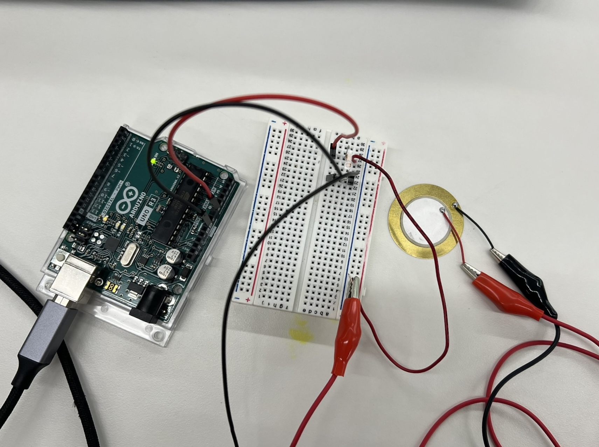
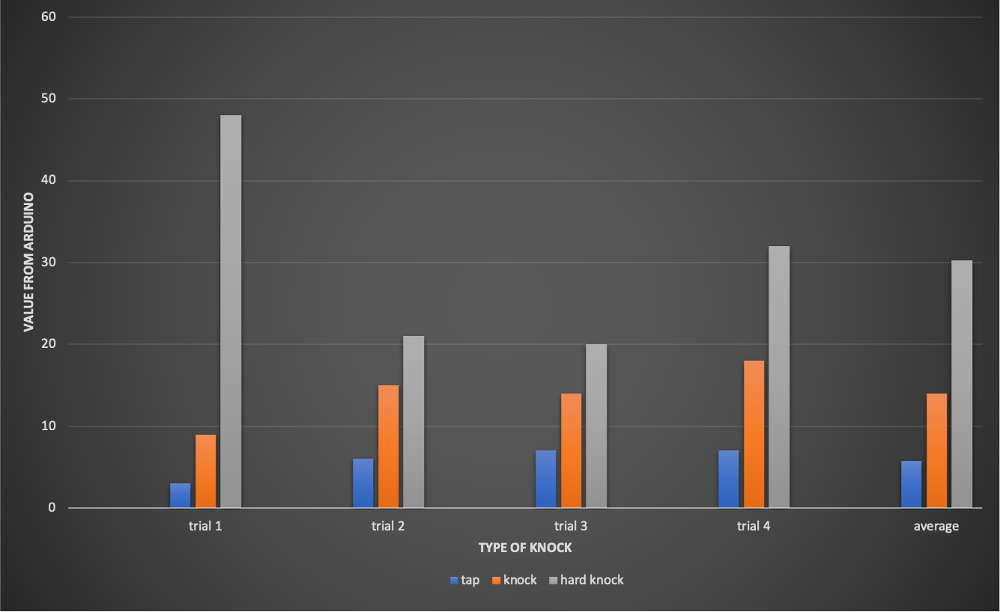
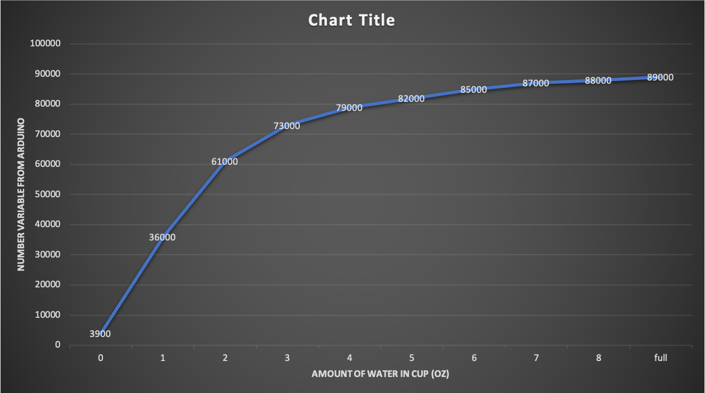

<br>
### Week 6: Electronic Input Devices
<br>
<p>This week we learned about electronic input devices and sensors. The first part of my assignment was to measure a physical quantity with my microcontroller and then do the same with a capacitive senor (tx-rx).</p>
<br>
#####<strong>Piezoelectric Sensors</strong>
<p>As we get closer and closer to the actual building of out final projects, I decided to work with something that I could incorporate into my case. Because a piezo vibrates when volatage is applied to it, I thought that those vibrations would make the case more like the ultrasonic cleanser.</p>
<p>The final set up was pretty simple with a black wire at ground and a red wire at A0 which connected to the breadboard and eventually the peizo. However, before this setup, I did include a resistor. Unfortunately, the lowest resistor at the lab was 100 Ohms, however, the value that would show up after the knocks was too small and would mostly stay at 0.00. To fix this, I realized that I needed to work without a resistor to get genuine values.</p>
<br>
<center></center>
<br>
<p>After this, I calibrated the microcontroller to have a max of 1023 and a min of 0. The complete final code is below...</p>
<br>
<div class="box">
<pre><code class="language-arduino">
const int PIEZO_PIN = A0; // Piezo output
void setup()
{
Serial.begin(9600);
}
void loop()
{
// Read Piezo ADC value in, and convert it to a voltage
int piezoADC = analogRead(PIEZO_PIN);
float piezoV = piezoADC / 1023.0 * 5.0;
Serial.println(piezoADC);
delay(100);
}
</code></pre> </div>
<br>
<p>From there, I decided to measure the values types of sounds/touch(tap, knock, hard knock) and how they would show up on the Arduino's serial plotter and monitor. The chart below describes what value would show up for each type of knock throughout 4 trials and their average.</p>
<br>
<center></center>
<br>
#####<strong>Capacitive Sensors</strong>
<p>The second part of my assignments this week was to also count a physical quantity, but with a tx-rx sensor. Since my glasses cleaning machine also requires the use of water, I decided to measure the amount of water in a cup.<p>
<p>First, I placed copper on two sides of the cup (that didn't cover the measurements) and I attached my power(red) and ground(black) wire. Then, I connected the cup to the Arduino board. I began to fill the cup and recorded the values from the serial plotter and monitor at each ounce.</p>
<br>
<figure>
<div class="row">
<div class="column3">
<center><img src="txrx-0oz.png" height="75%" width="75%"><figcaption>Cup with 0oz</figcaption></center>
</div>
<div class="column3">
<center><img src="txrx-4oz.png" height="75%" width="75%"><figcaption>Cup with 4oz</figcaption></center>
</div>
<div class="column3">
<center><img src="txrx-8oz.png" height="75%" width="75%"><figcaption>Cup with 8oz</figcaption></center>
</div>
</figure>
<br>
<p>The graph below should the relationship between the ounces of water in the and the value given by the arduino. As you can see, the graph resembles a sort of logrithmic function with lots of growth at the beginnning and less growth at the end.</p>
<br>
<center></center>
<br>
<center>[HOME](../index.html)</center>